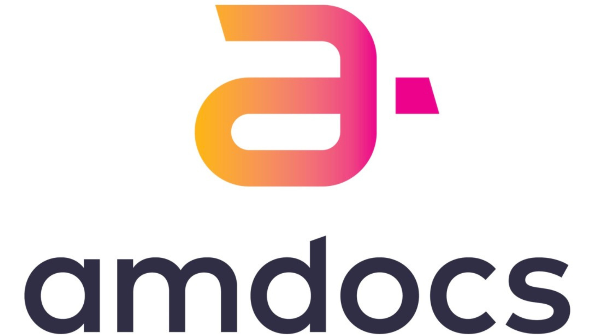
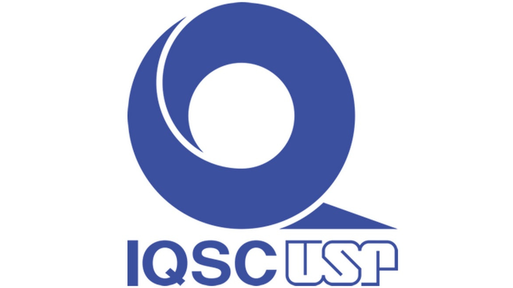

PERFIL PESSOAL
Sou formado em Sistemas de Informação pela Universidade de
São Paulo (USP) e atuo como Analista de Sistemas no
Instituto de Química da USP de São Carlos, com foco no
desenvolvimento, manutenção e suporte de softwares e de
sites institucionais, além do atendimento a demandas de TI
de todo o Instituto.
Possuo experiência em desenvolvimento de sistemas, análise
de dados e suporte técnico, com atuação nos setores
acadêmico e de telecomunicações, incluindo a resolução de
problemas técnicos para empresas como Vivo, Claro e
Telefônica, trabalhando com análise de logs, consultas SQL e
revisão de código.
Atualmente, curso um MBA no ICMC/USP em Ciência de Dados com
o objetivo de aprofundar meus conhecimentos na área. Durante
minha formação, tive a oportunidade de realizar uma
iniciação científica e também um estágio relacionados a esse
campo, experiências que me proporcionaram um primeiro
contato prático e despertaram ainda mais meu interesse em
direcionar minha atuação profissional para essa área.
EXPERIÊNCIAS
Universidade de São Paulo (2020 - 2021)
Estágio realizado no Instituto de Arquitetura e
Urbanismo (IAU-USP), com foco em análise e visualização
de dados educacionais. Atuei no tratamento e exploração
de bases de dados da plataforma CAPES, referentes a
cursos de nível superior. Durante o período, utilizei
bases históricas contendo informações sobre alunos,
docentes e produções acadêmicas para gerar visualizações
interativas, facilitando a interpretação e extração de
insights relevantes.
AMDOCS Brasil (2022 - 2024)

Atuava na análise e resolução de problemas técnicos em
sistemas de informação voltados para o setor de
telefonia. Realizava diagnósticos completos,
investigando logs, consultando tabelas em bancos de
dados, revisando código-fonte e analisando documentação
técnica para identificar a causa raiz das falhas.
Propunha e documentava soluções e melhorias, assegurando
a continuidade e a eficiência operacional dos sistemas.
Utilizava tecnologias como Docker (com Kubernetes),
linguagens Java e JavaScript, Shell Script e SQL para
análises detalhadas e implementação de correções.
Universidade de São Paulo (desde 2024)

Integro a seção técnica de informática do Instituto de
Química, atendendo demandas relacionadas à manutenção,
instalação e configuração de hardwares e softwares.
Responsável pelo desenvolvimento de sistemas e projetos
de programação, atendendo às necessidades
institucionais. Desenvolvimento full-stack utilizando
tecnologias como JavaScript, Java, Node.js, React, React
Native e bancos de dados SQL e NoSQL. Gerenciamento de
versionamento e colaboração em equipe com Git/GitHub.